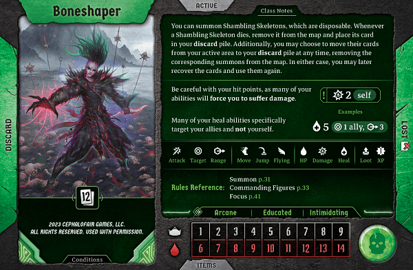
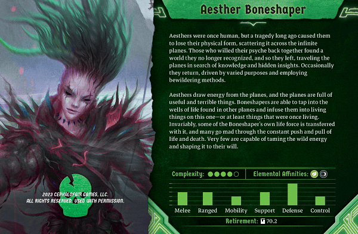

|  |  |
The Boneshaper is a low-health summoner/support class. She has access to a variety of different summons but notably non-loss summons. Playing around non-loss summons allows her to protect herself from the biggest issue with summoner classes - when something goes wrong, you become useless afterwards. As with any summoner class, she still requires a reasonable familiarity with monster AI.
The Boneshaper can fit well into any party because her variety of summon-based builds allow her to function as a sort of tank, damage-dealer, or support. She has natural synergy with any effects that affect all allies (like a Bannerspear's Banner of Strength). But beyond that, playing an effective Boneshaper in your party will just involve needing to understand your party's strengths, weaknesses, and natural play patterns.